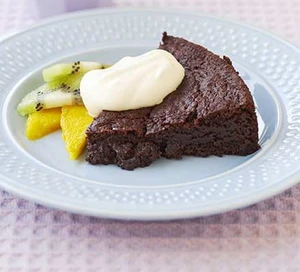

Chocolate Brownie Cake

Get kids cooking at the weekend by baking this yummy brownie cake, much better than shop bought!
Ingredients
- 100g butter
- 125g caster sugar
- 75g light brown or muscovado sugar
- 125g plain chocolate (plain or milk)
- 1 tbsp golden syrup
- 2 eggs
- 1 tsp vanilla extract/essence
- 100g plain flour
- ½ tsp baking powder
- 2 tbsp cocoa powder
Steps
- Heat oven to 180C/fan 160C/gas 4. Grease and line a 20cm cake tin.
- Place the butter, caster sugar, brown sugar, chocolate and golden syrup in the pan and melt gently on a low heat until it is smooth and lump-free.
- Remove the pan from the heat.
- Break the eggs into the bowl and whisk with the fork until light and frothy. 5 Add the eggs, vanilla extract or essence, flour, baking powder and cocoa powder to the chocolate mixture and mix thoroughly.
- Put the mixture into the greased and lined cake tin and place on the middle shelf of the oven. Bake for 25-30 mins.
- Remove and allow to cool for 20-30 mins before cutting into wedges and serving.
- Serve with cream or ice cream and plenty of fresh fruit.
Source: CLICK HERE
GO BACK ←